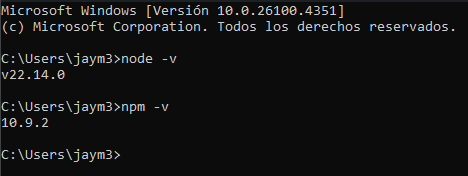

¿Qué es Node.JS?
Node.JS es un entorno de ejecución de Javascript basado en el motor V8 de Google para ejecutar codigo Javascript fuera del navegador y desde el lado del backend, basado en el paradigma programación asíncrona.
Node.JS es un entorno de ejecución de Javascript basado en el motor V8 de Google para ejecutar codigo Javascript fuera del navegador y desde el lado del backend, basado en el paradigma programación asíncrona.
Es código que se ejecuta en el navegador del usuario (chrome, safari, firefox...). Tiene acceso directo al DOM, window, eventos, etc, todo se ejecuta del lado del cliente
Es todo JS que corre del lado del cliente, pero en formas diferentes al navegador, incluyendo apps, WebViews o frameworks como React, Vue o Angular.
! Todo JavaScript en el navegador es frontend, pero no todo frontend depende solo del navegador.
Node.js es potente para muchos casos, pero como toda herramienta, debe usarse donde más eficiente sea.
Para instalar Node.JS en tu sistema, tienes varias opciones, pero te mostraré la más sencilla para que puedas tener Node.JS instalado en tu computadora.
Paso 1: Ve al sitio oficial de Node.js
Dirígete a https://nodejs.org/en/download y verás dos versiones disponibles:
Recomendación: Siempre elige la versión LTS para proyectos de producción.
Paso 2: Descarga el instalador
Haz clic en el botón de descarga correspondiente a tu sistema operativo:
Paso 3: Ejecuta el instalador
Una vez descargado, ejecuta el archivo y sigue el asistente de instalación:

Paso 4: Comprobar la instalación
Una vez descargado, abriremos una nueva términal (cmd o powershell) y escribiremos los siguientes comandos.
node -v
Luego:
npm -v
Te debería de parecer algo similar a esto:
¡Perfecto! Si ves los números de versión, Node.js está correctamente instalado en tu sistema.
Los módulos son una de las características más importantes de Node.js. Te permiten organizar tu código en archivos separados y reutilizar funciones, variables y objetos entre diferentes partes de tu aplicación.
Un módulo en Node.js es simplemente un archivo JavaScript que puede exportar funciones, objetos, variables o clases para ser utilizadas en otros archivos.
Nota: En esta guía usaremos la sintaxis CommonJS que es la más común en Node.js
Vamos a crear una calculadora dividida en módulos para entender mejor el concepto.
Paso 1: Crea la estructura de carpetas
Primero, crea una carpeta llamada "calculadora-modular" y organiza los archivos (el archivo package.json es un archivo que abordaremos más adelante en el blog, pero puedes crearlo con el comando "npm init -y"):
calculadora-modular/ operaciones.js # Módulo con las funciones calculadora.js # Archivo principal package.json # Configuración del proyecto
Paso 2: Crea el módulo de operaciones (operaciones.js)
Este archivo contendrá las funciones matemáticas que queremos exportar:
// operaciones.js// Función para sumar dos númerosfunction sumar(a, b) { return a + b;}// Función para restar dos númerosfunction restar(a, b) { return a - b;}// Función para multiplicar dos númerosfunction multiplicar(a, b) { return a * b;}// Función para dividir dos númerosfunction dividir(a, b) { if (b === 0) { throw new Error('No se puede dividir por cero'); } return a / b;}// Variable constanteconst PI = 3.14159;// EXPORTAR las funciones y variablesmodule.exports = { sumar, restar, multiplicar, dividir, PI};
Paso 3: Formas alternativas de exportar
Node.js te ofrece diferentes maneras de exportar. Aquí algunas alternativas:
Opción A: Exportar individual
// Al final de cada funciónmodule.exports.sumar = sumar;module.exports.restar = restar;module.exports.PI = PI;
Opción B: Exportar directo
// Directamente en la declaraciónexports.sumar = function(a, b) { return a + b;};
Paso 4: Crea el archivo principal (calculadora.js)
Ahora vamos a importar y usar las funciones del módulo operaciones:
// calculadora.js// IMPORTAR el módulo completoconst operaciones = require('./operaciones');// Usar las funciones importadasconsole.log('=== CALCULADORA MODULAR ===');console.log(`Suma: 5 + 3 = ${operaciones.sumar(5, 3)}`);console.log(`Resta: 10 - 4 = ${operaciones.restar(10, 4)}`);console.log(`Multiplicación: 6 * 7 = ${operaciones.multiplicar(6, 7)}`);console.log(`División: 15 / 3 = ${operaciones.dividir(15, 3)}`);console.log(`Valor de PI: ${operaciones.PI}`);
Paso 5: Formas alternativas de importar
También puedes importar elementos específicos usando destructuring:
// Importar funciones específicasconst { sumar, restar, PI } = require('./operaciones');// Ahora puedes usarlas directamenteconsole.log(`Suma: ${sumar(8, 2)}`);console.log(`Resta: ${restar(10, 3)}`);console.log(`PI: ${PI}`);
Paso 6: Ejecuta el programa
Guarda ambos archivos y ejecuta el programa desde la terminal:
cd calculadora-modularnode calculadora.js
Al ejecutar, la terminal debería de mostrarte algo como esto: